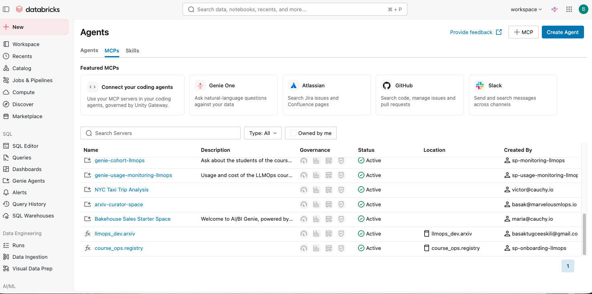

Agent orchestration
Workflows, agents, and tool control.
LECTURE 3
21 October 2026
Agent orchestration with Databricks

Today we move from retrieval to agents that can decide when to use retrieval and other tools.
LECTURE 3
Workflows, agents, and tool control.
A standard way to expose tools and resources.
Databricks services, AI Search, Genie, and SQL.
Memory and application state.
Build a tool-calling agent over our pgvector retrieval layer.
We will connect the concepts from Lecture 2 to a working agent that can choose and call tools.
We start with the protocol that standardizes how models and applications connect to tools.
MCP
Exposes tools and resources to connected AI clients.
Connects to servers and calls the tools they make available.
Functions an AI model can call to retrieve data or perform an action.
Data or contextual material an MCP server makes available to the client.
MCP separates the agent from the implementation details of a tool. The client discovers capabilities from a server and invokes them through a common protocol.
MCP
| Question | MCP server | Custom function |
|---|---|---|
| Setup | Connect to an existing server. | Write and register Python code. |
| Reuse | One server can support many agents. | Usually designed for one application. |
| Security | Authentication and authorization can be managed centrally. | The application owns the security implementation. |
| Customization | Use the capabilities the server exposes. | Implement custom business logic directly. |
MCP is valuable when a capability should be reused across applications. Custom functions remain the better choice when we need full control over logic and data access.
DATABRICKS
Databricks provides managed MCP endpoints for common platform capabilities.
| Server | Purpose | Current route |
|---|---|---|
| AI Search | Query a Databricks AI Search index. | /api/2.0/mcp/ai-search/{catalog}/{schema}/{index} |
| Genie | Ask natural-language questions over a Genie Space. | /api/2.0/mcp/genie/{space_id} |
| Unity Catalog functions | Invoke registered functions. | /api/2.0/mcp/functions/{catalog}/{schema} |
| DBSQL | Run permitted SQL operations. | /api/2.0/mcp/sql |
The legacy vector-search route may remain available for compatibility; new material should use AI Search terminology.
Managed MCP reduces the amount of infrastructure we need to build. Permissions still matter: the agent only receives capabilities that its identity is allowed to use.
DATABRICKS

The UI and available managed servers change over time. Treat the workspace and current documentation as the source of truth.
This screenshot shows the platform experience for discovering MCP servers. We should not hard-code a UI label or assume every workspace has the same servers enabled.
MCP
Agents use a common protocol across different systems.
One server can expose a capability to many agents.
The platform can operate the server and its connections.
Authentication, authorization, and scaling are part of the platform design.
MCP does not remove the need for good tool design. It gives us a consistent connection layer so agents can discover and invoke tools safely.
AGENTS
The system prompt explains the agent’s role, boundaries, and response style.
The configured model produces the next response or tool call.
Functions or APIs the model can invoke to accomplish the task.
The model decides whether a tool is needed and what arguments to provide.
For this course, the important distinction is tool control. The model is not limited to generating text. It can request an operation, receive the result, and continue reasoning.
AGENTS
Define the role and constraints.
Chooses the next response.
Accesses data and actions.
An agent combines language reasoning with external capabilities. The model can interpret a question, select a tool, use its result, and produce a grounded answer.
ORCHESTRATION
The developer controls the sequence: retrieve, prompt, call the model, and return the answer. This is predictable and easier to test.
Control lives in code.
The model chooses whether to call a tool, which tool to call, and whether another step is needed.
Control is shared with the model.
Agents add flexibility, but they also introduce more possible failure modes. We should start with deterministic workflows when the steps are known in advance.
ORCHESTRATION
| Workflow | Agent | |
|---|---|---|
| Sequence | Predefined by the application. | Chosen dynamically by the model. |
| Debugging | Usually more predictable. | Requires traces and tool-call inspection. |
| Best use | Stable, repeatable business processes. | Open-ended tasks with several possible actions. |
| Risk | Can be rigid when the task changes. | Can call the wrong tool or loop unnecessarily. |
The choice is architectural, not a question of which approach is always better. A reliable system often combines a controlled workflow with a small amount of agentic tool selection.
AGENTS
Receives instructions and the user request.
Decides whether external information is needed.
Uses the observation to continue or answer.
If the application code always calls the tool, that is a workflow. If the LLM requests the tool, it is agentic tool calling.
This definition keeps the implementation distinction clear. Both workflows and agents can be useful, but only the agent delegates the decision to call a tool to the model.
RAG
User question → application retrieves chunks → application builds a prompt → model answers.
Retrieval is fixed and happens outside the model.
User question → model decides to call search_papers() → tool returns chunks → model answers.
The model controls when and how retrieval happens.
Our pgvector search remains the same. The change is the interface: instead of always retrieving first, we expose search as a tool that an agent can call when appropriate.
IMPLEMENTATION
Asks a research question.
Chooses search_papers.
Runs pgvector hybrid search.
Uses results and cites evidence.
search_papers(query, num_results, year_filter)
→ LakebasePgVectorManager.hybrid_search(...)
→ chunks, metadata, scores
→ grounded responseThe tool should expose a narrow contract. The agent does not receive database credentials or arbitrary SQL. It supplies a query and receives relevant chunks with metadata that can support citations.
UNITY CATALOG
CREATE FUNCTION llmops_dev.arxiv.add_numbers(a DOUBLE, b DOUBLE) RETURNS DOUBLE LANGUAGE PYTHON RETURN a + b;server = "/api/2.0/mcp/functions/llmops_dev/arxiv"; client discovers the function; model can call itUse direct SQL when the workflow is fixed. Use UC Functions MCP when multiple agents need governed, discoverable functions.
A Unity Catalog function is governed reusable logic. Databricks can expose it through MCP so an agent can discover and invoke approved functions without embedding database-specific details in every application. MCP is most useful when the same functions should be shared across agents and clients.
UNITY CATALOG
CREATE FUNCTION llmops_dev.arxiv.add_numbers(a DOUBLE, b DOUBLE) RETURNS DOUBLE LANGUAGE PYTHON RETURN a + b;server = "/api/2.0/mcp/functions/llmops_dev/arxiv"; client discovers the function; model can call itUse direct SQL when the workflow is fixed. Use UC Functions MCP when multiple agents need governed, discoverable functions.
A Unity Catalog function is governed reusable logic. Databricks can expose it through MCP so an agent can discover and invoke approved functions without embedding database-specific details in every application. MCP is most useful when the same functions should be shared across agents and clients.
PRACTICE
Review the agent and MCP materials and decide which parts of your use case need tools.
Sketch the orchestration logic. Decide which steps are deterministic and which decisions belong to the model.
Build tool calling with custom functions or MCP, depending on the requirements of your use case.
Create a pull request with the implementation and explain the design choices.
Start with the smallest useful tool. A single reliable retrieval or lookup tool is better than a large collection of loosely defined tools.
MCP, tools, and agents
Next: build reliable agent applications around the retrieval layer.
Invite questions about when to use a workflow, when to use an agent, and how the pgvector tool fits into the architecture.